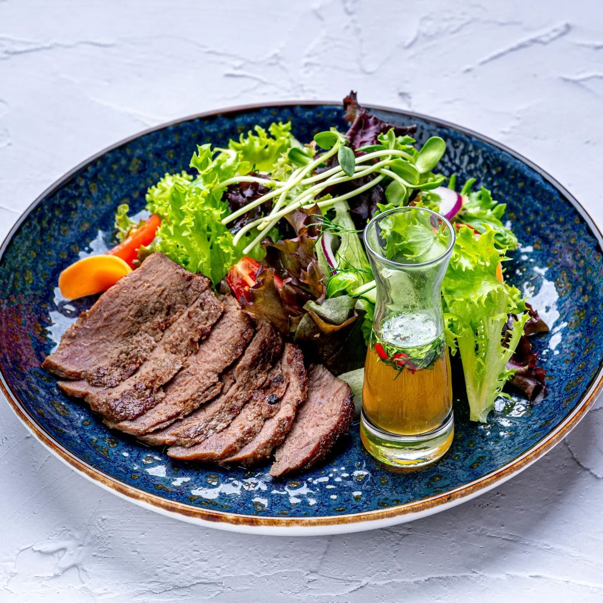
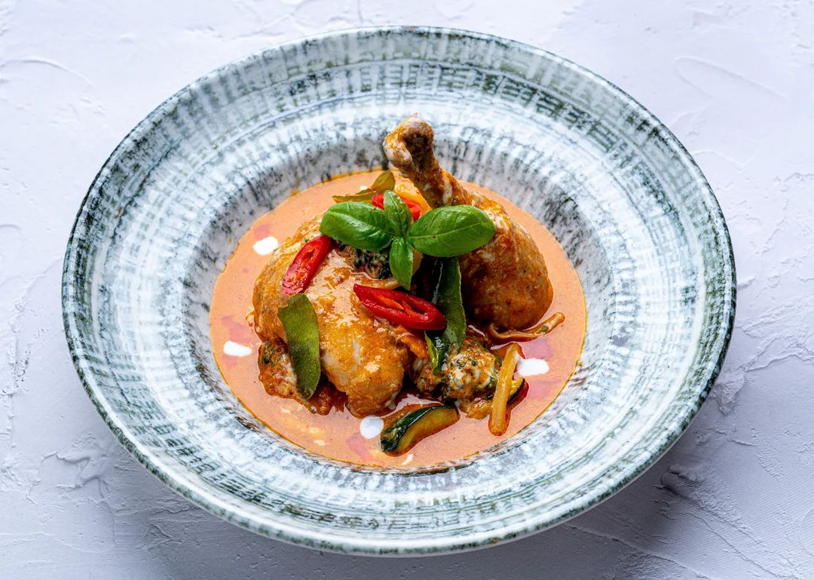
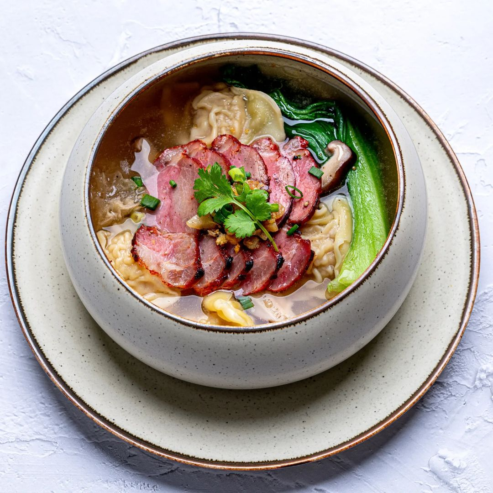
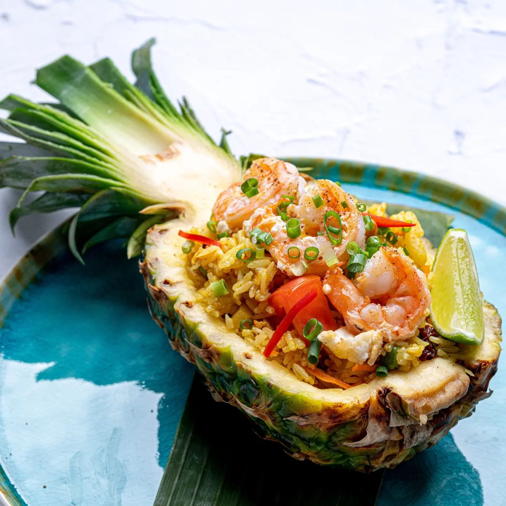
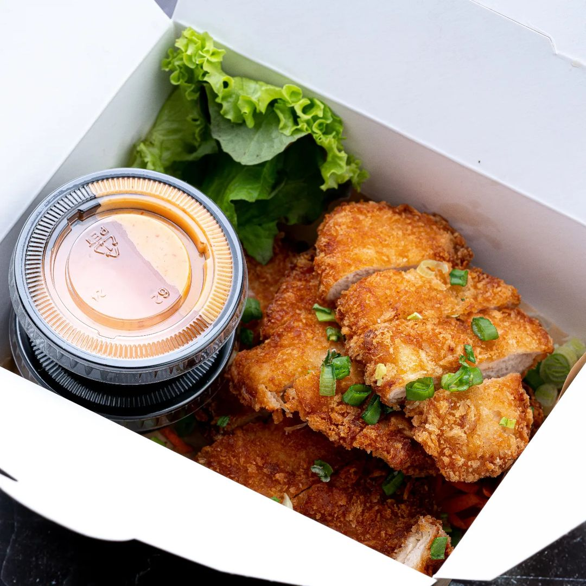
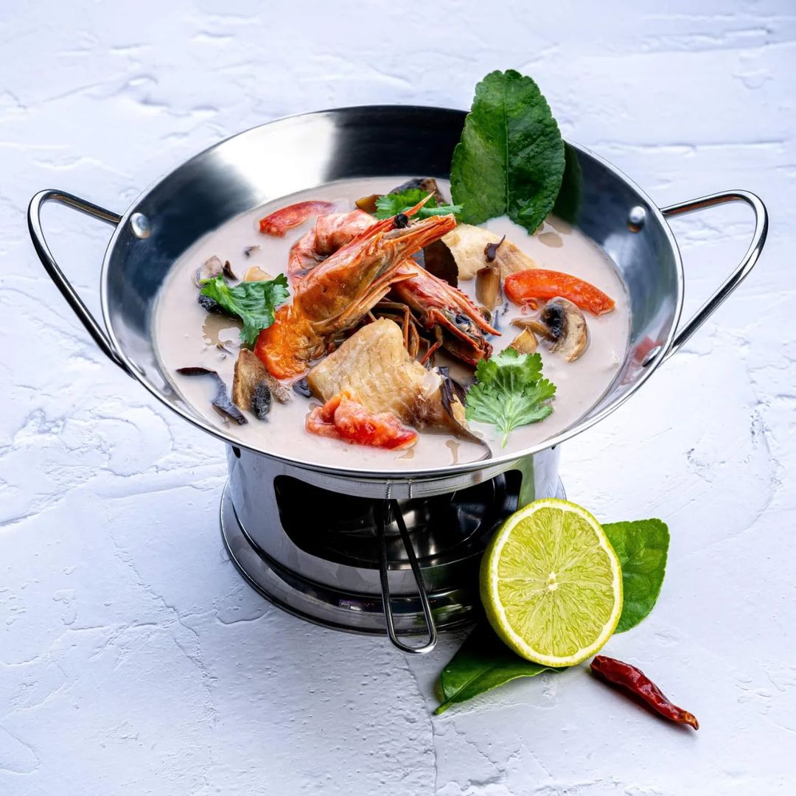
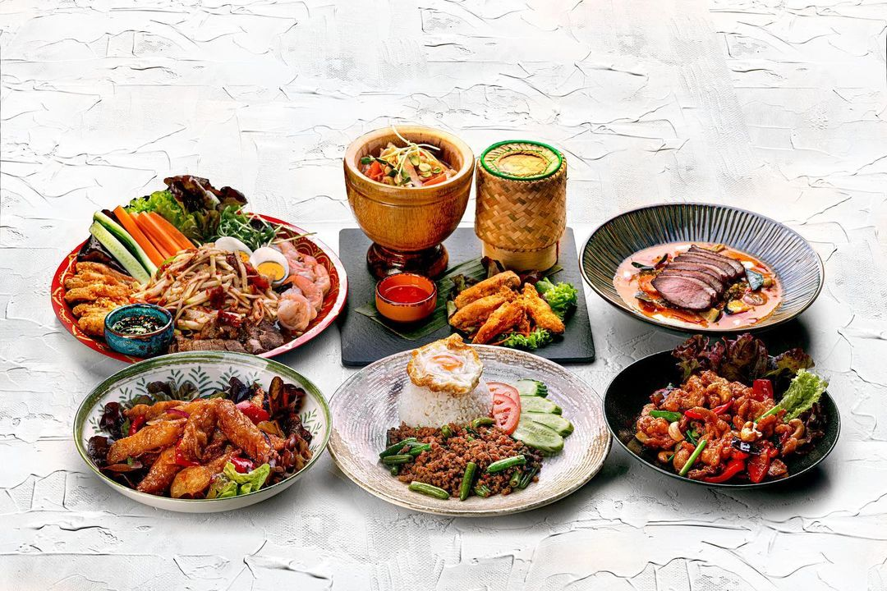
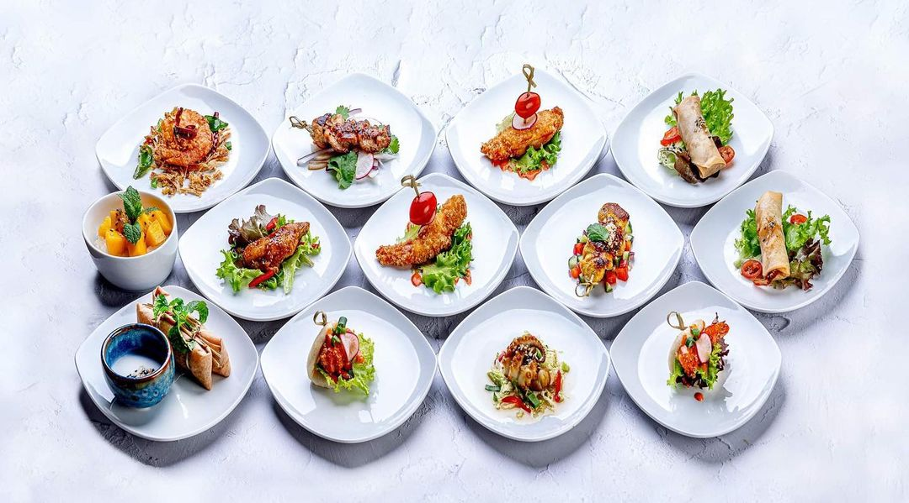
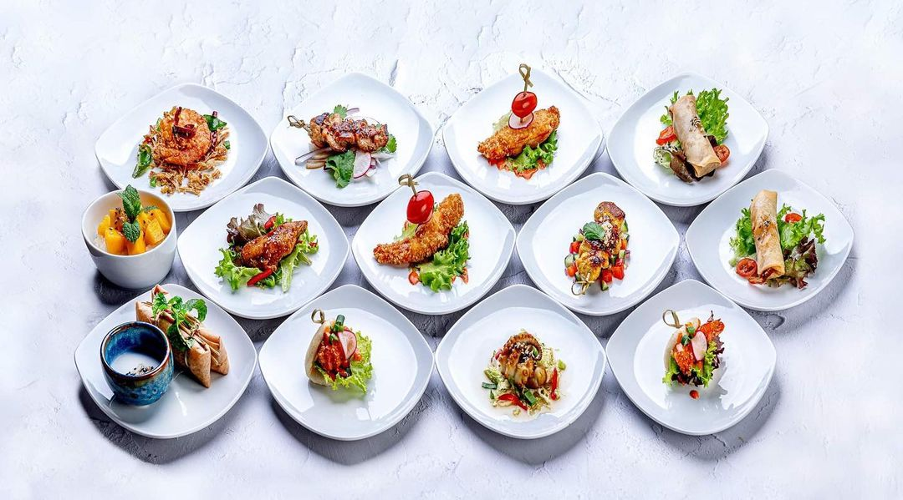
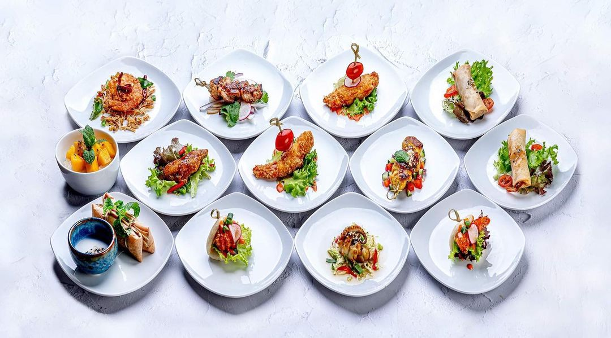

Tailandiečių restoranas Vilniuje
Įkvėpti Tailando kultūros turtingumo ir unikalios virtuvės, mes, restorano komanda, siekėme sukurti erdvę, kurioje kiekvienas
svečias galėtų mėgautis ne tik gardžiais patiekalais, bet ir tikro tailandietiško svetingumo atmosfera.
Kelionės po Tailandą mums suteikė nepamirštamų įspūdžių apie gatvės maisto aromatus ir tradicinius kulinarinius malonumus.
Džiaugiamės galėdami su jumis pasidalinti autentiškais skoniais ir šeimos receptais, kad kiekvienas apsilankymas mūsų restorane
taptų tikru pasinerimu į nuostabų Tailando virtuvės ir kultūros pasaulį.








 

